Historia
Historia
Habrían de transcurrir siglos hasta llegar a los padres reconocidos del atomismo, teoría filosófica que se fundamentaba en razonamientos lógicos y la observación del mundo pero no en la experimentación. Y, a pesar de ello, sorprende lo mucho que se acercaron.
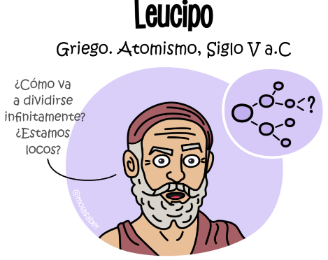 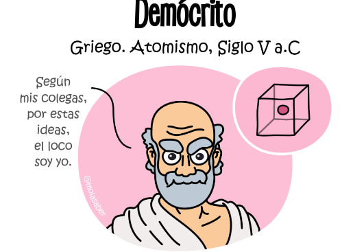Casi 100 años después llegaría el turno de Epicuro. Para él, y para otros muchos filósofos, el universo no podía ser determinista, el ser humano tenía que hacer uso de su libre albedrío. Por ello planteó que el azar era un fenómeno inherente al movimiento de los átomos.
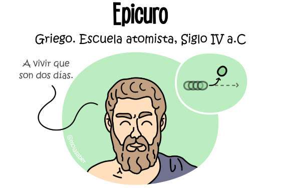Pero la filosofía occidental no fue la única que exploró estos pensamientos. Así conocemos a Kanada, sobrenombre que significa «comedor de partículas» pues dicen, que fue desmenuzando su comida en partes cada vez más pequeñas, cuando se le ocurrió que debía haber un límite.

Volviendo a Grecia antes de Kanada, Empédocles también estableció que la materia estaba formada por 4 elementos: tierra, agua, aire y fuego. Aristóteles apoyó este pensamiento, negó el átomo y así nos pasamos 2000 años. Por suerte, la humanidad abrazó el pensamiento científico.
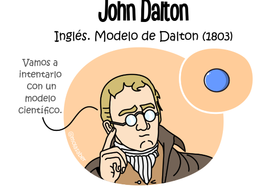El modelo de Dalton, aún con sus problemas, significó un antes y un después. Luego, a finales del siglo XIX, Thomson descubría el electrón abriendo la veda a nuevas propuestas atómicas. El modelo cúbico representó un paso importante hacia el entendimiento del enlace químico.
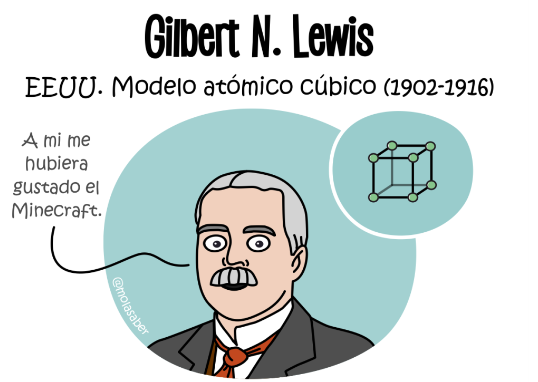Fue una época emocionante, llena de descubrimientos, entre ellos, el fenómeno de radiactividad o los espectros de emisión de luz de los elementos. Todo esto debía encajar y el físico japonés Hantaro Nagaoka lo intentó con una propuesta que se parecía al sistema de Saturno.
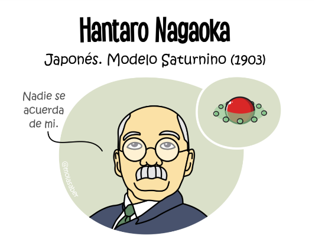Y también lo hizo J.J. Thomson, que a raíz de sus experimentos con rayos catódicos, da forma a su peculiar modelo años después. Por aquel entonces aun se refería a los electrones como corpúsculos de carga de negativa.
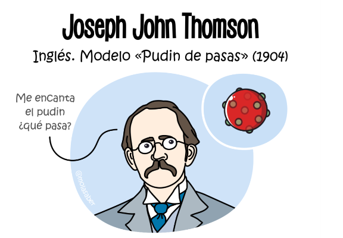Con cada experimento se desentrañaba más y más la realidad del átomo. Perrin demostró que las cargas negativas de los rayos catódicos se transferían al «exterior» del átomo y de ahí nace su modelo planetario con carga positiva central.
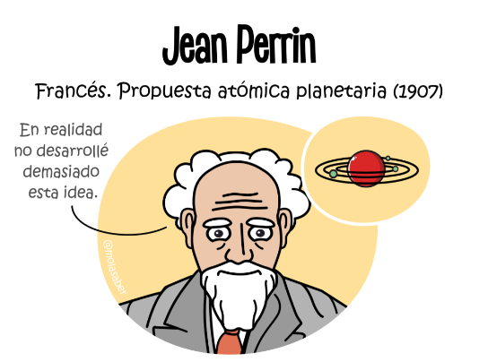Poco después Rutherford haría chocar partículas alfa contra una fina lámina de oro. Comprobó que algunas de estas partículas se desviaban, incluso en sentido opuesto, lo que significaba que debían estar chocando contra un núcleo de carga positiva y que el resto del átomo estaba casi vacío.
Esta visión del átomo se ha instalado en la cultura popular como una abstracción lo bastante buena para ayudar a entender sus partes fundamentales pero, como veremos mas adelante, insuficiente para explicar las interacciones químicas o fenómenos de naturaleza cuántica.
Partiendo del modelo de Rutherford, Bohr dispuso los electrones en órbitas circulares ordenadas por niveles de energía. Las limitaciones del modelo dieron pie al desarrollo de la Mecánica Cuántica, pero por su sencillez aún se utiliza para comprender la teoría atómica.
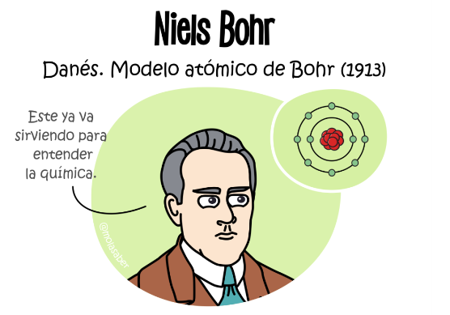Continuando con el modelo de Bohr, que no alcanzaba a explicar la existencia de electrones de un mismo nivel energético pero con distinta energía —realidad observada en los espectros de algunos átomos—, Sommerfeld concluyó que debía haber subniveles dentro de un mismo nivel energético. Además aplicó un enfoque relativista en sus estudios puesto que los electrones pueden alcanzar velocidades cercanas a la de la luz.
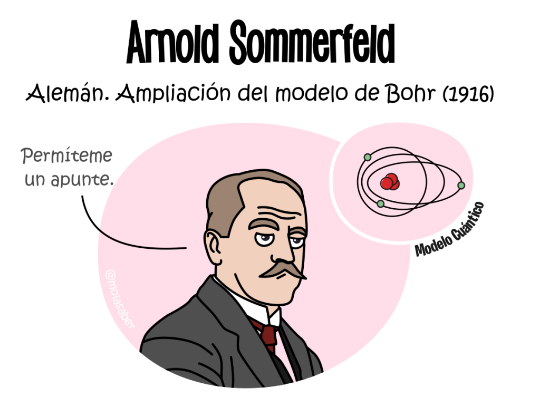Y entonces llegó Schrödinger —sí, sí, el del gato—, y describió el comportamiento ondulatorio del electrón, sin posición definida dentro del átomo en una zona de probabilidad, los orbitales atómicos. Su ecuación para la función de onda es una de las más famosas de la física.
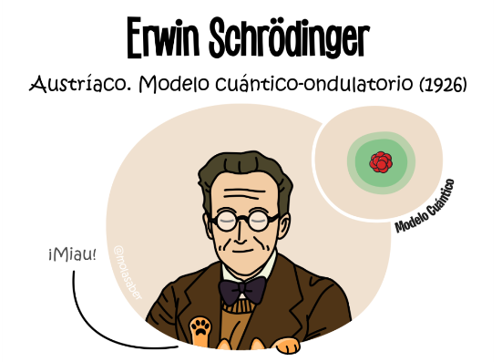Y no podemos olvidar a Chadwick que con sus experimentos observó energías muy superiores de las que cabría esperar en ciertas colisiones radioactivas, encontrando el neutrón, partícula predicha por Rutherford en 1920. El retrato del átomo se completaba.
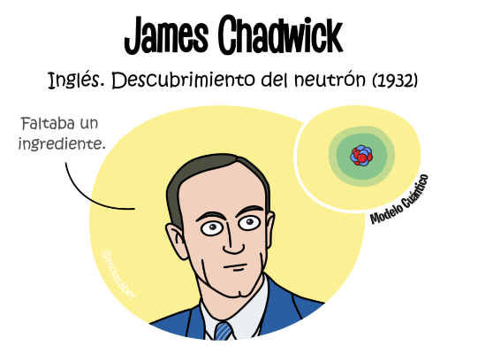Al final, tantas mentes aportando piezas de este enorme rompecabezas para llegar al modelo actual, nacido en 1928 con la ecuación de Dirac, una versión relativista de la de Schrödinger; y con la aportación de Jordan, introduciendo el espín (con lo que se predeciría más adelante la antimateria).
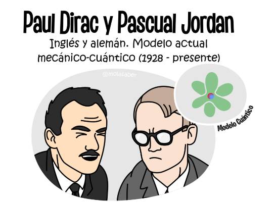Desde entonces este modelo, que se ha ido afinando, soporta bastante bien los embates de las realidad. Ahora sabemos que neutrones y protones están conformados a su vez de quarks y que estos pueden interactuar con las partículas virtuales del vacío.
¿Qué nos seguirá deparando el estudio de la física? Quién sabe, pero hasta aquí llega este post de los modelos atómicos. Espero que lo hayas disfrutado. Nos vemos pronto con más conocimiento que mole saber. ¡Hasta otra!